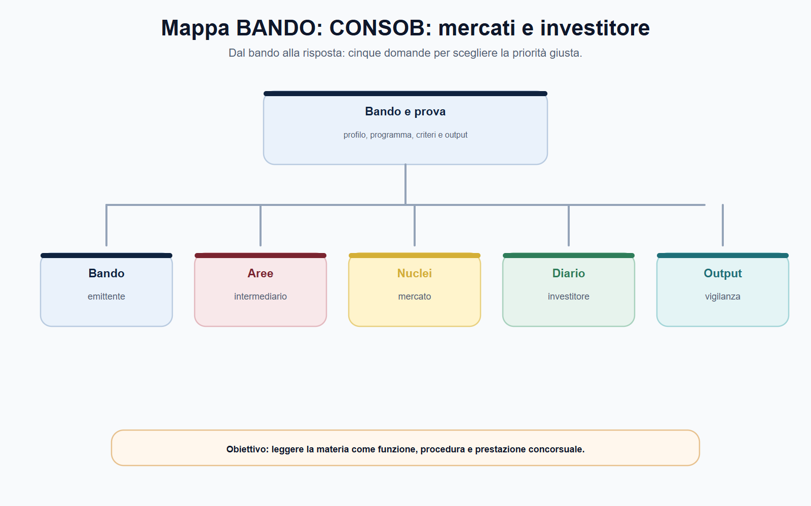
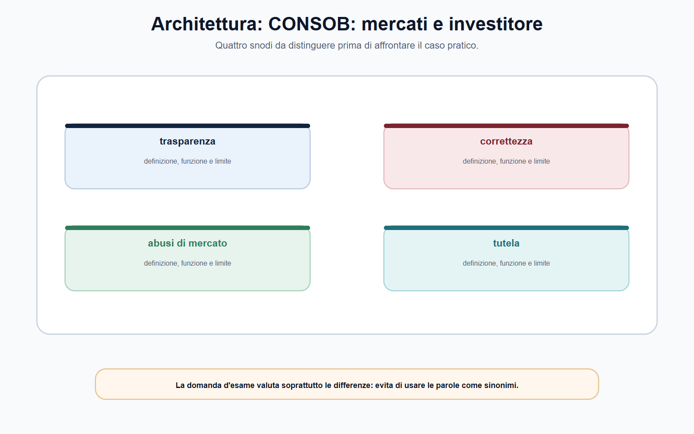
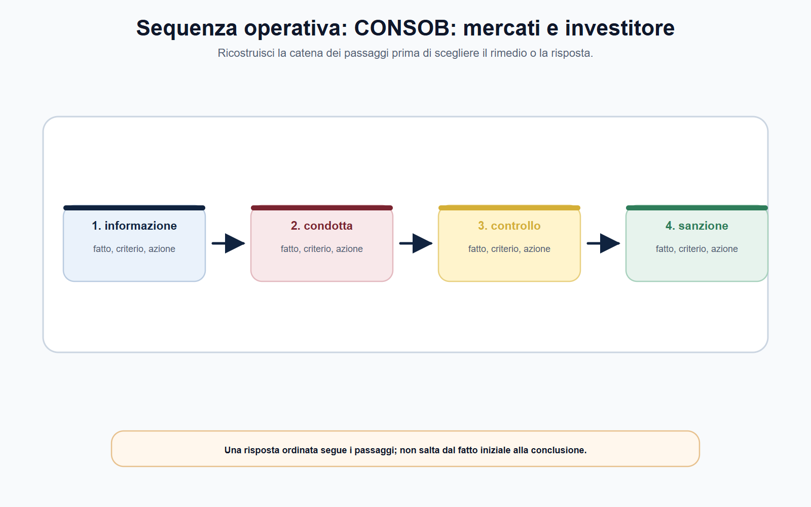
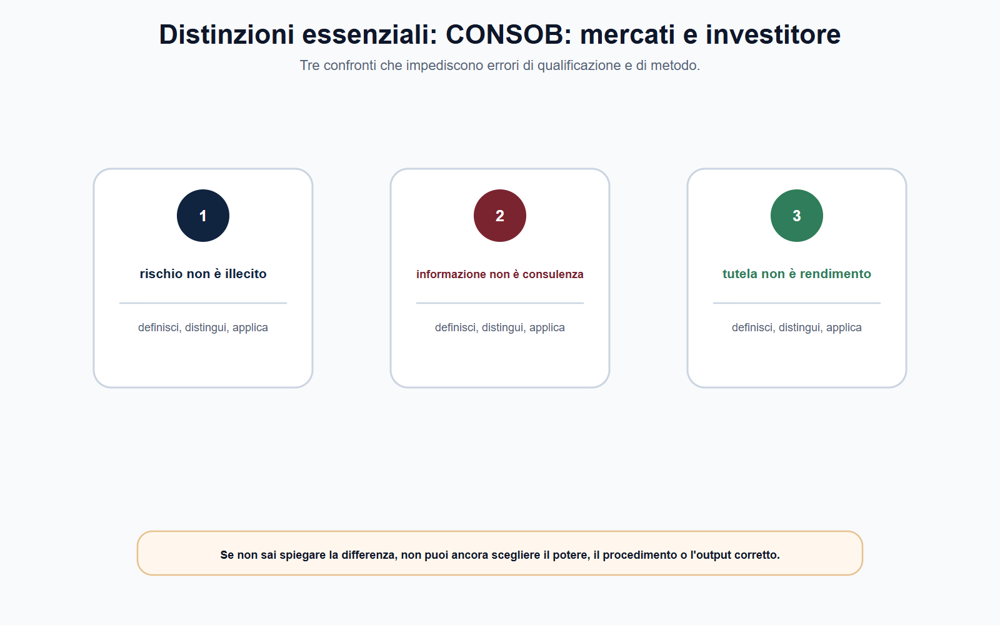

VOL-05 · Capitolo 11
M-FC05
CONSOB:
mercati, intermediari e tutela dell'investitore
La vigilanza CONSOB sta nel punto in cui il risparmio incontra il mercato. Non promette che ogni investimento sia redditizio. Rende il processo informativo e negoziale trasparente, corretto e vigilato, così da consentire decisioni consapevoli e da preservare l'integrità del mercato.
01 · Il problema in prova
La perdita non prova l'illecito
Nei bandi ricorrono TUF, MiFID, MAR, intermediari, emittenti, ACF. La difficoltà non è nominare CONSOB. È capire se il fatto riguarda l'informazione dell'emittente, la condotta dell'intermediario, il funzionamento del mercato o un possibile abuso, e quale procedura è davvero competente.
Che cos'è
CONSOB vigila su emittenti, intermediari, sedi di negoziazione, offerte, informazione societaria e abusi di mercato. La tutela dell'investitore è un processo vigilato, non una garanzia di rendimento o un rimborso automatico della perdita.
A che serve in prova
A respingere lo slogan «CONSOB tutela il risparmiatore, Banca d'Italia tutela le banche». Prudenza e vigilanza di mercato sono collegate, ma non coincidenti. Il caso concreto richiede la fonte che distribuisce i poteri.
Non dedurre un illecito dalla perdita subita dall'investitore.
Ricostruisci prodotto, servizio, informazione disponibile, comportamento dell'intermediario o dell'emittente, mercato coinvolto e fonte applicabile. Solo dopo valuti violazione, potere e rimedio.
02 · BANDO
Cinque decisioni su questo capitolo
Il metodo non parte dal nome dell'autorità. Parte dal bando e ricostruisce soggetti, nuclei e output.
| Che cosa fai | Se la salti | |
|---|---|---|
| B — Bando | Cerca CONSOB, TUF, MiFID/MiFIR, MAR, intermediari, emittenti, ACF, cripto-attività. | Studi un elenco di sigle senza funzione. |
| A — Aree | Collega informazione, condotta, integrità del mercato, tutela individuale e cooperazione UE. | Tratti ogni perdita come un caso di rimborso. |
| N — Nuclei | Emittente / intermediario / sede / investitore; MiFID ≠ MAR; CONSOB ≠ Banca d'Italia. | Attribuisci il potere all'ente sbagliato. |
| D — Diario | Segna «perdita = illecito», «ogni notizia riservata è privilegiata», «CONSOB rimborsa». | Ripeti le tre trappole all'orale. |
| O — Output | Mappa soggetto–obbligo, schema MAR, percorso reclamo–ACF–giudice. | Frase generica sulla tutela del risparmio. |
03 · Soggetti
Quattro posizioni, quattro domande
Un caso finanziario diventa leggibile se si separano i soggetti. CONSOB vigila con strumenti differenziati proprio perché le obbligazioni non sono le stesse.

Dal bando alla risposta: emittente, intermediario, mercato e investitore non coincidono. La vigilanza è l'output, non il punto di partenza.
04 · Distinzione
CONSOB non è Banca d'Italia
Consob e Banca d'Italia operano in aree talvolta distinte, talvolta coordinate, secondo riparti fissati da fonti nazionali ed europee. Il confine non si risolve con una frase generica: prodotto, intermediario e servizio determinano il riparto.
| CONSOB | Banca d'Italia | |
|---|---|---|
| Oggetto | Mercato mobiliare, informazione, servizi di investimento, condotte, abusi. | Solidità, rischi, sana gestione; tutela della clientela bancaria e finanziaria nel perimetro attribuito. |
| Finalità | Trasparenza, correttezza, ordinato svolgimento delle negoziazioni, tutela degli investitori. | Vigilanza prudenziale e, nei limiti, trasparenza e correttezza dei rapporti bancari. |
| Errore | Trasformarla in sportello di rimborso delle perdite. | Attribuirle ogni questione su un prodotto di investimento. |
«CONSOB tutela il risparmiatore, Banca d'Italia tutela le banche». La realtà è articolata. Una stessa condotta può toccare entrambi i piani, ma ciascun potere richiede fonte, fatto e procedimento propri.
05 · Intermediari
Correttezza non è rendimento garantito
MiFID II e MiFIR, con la disciplina nazionale di attuazione, regolano la prestazione dei servizi di investimento. Appropriatezza, adeguatezza, informazione, costi, incentivi e gestione dei conflitti rilevano nel perimetro del servizio concreto, non come elenco da recitare.
| Soggetto | Domanda essenziale |
|---|---|
| Emittente | Le informazioni rilevanti sono complete, corrette e tempestive? |
| Intermediario | Il servizio è prestato con diligenza, correttezza e trasparenza? |
| Sede | Le negoziazioni sono trasparenti e ordinate? |
| Investitore | Quale prodotto, obiettivo, conoscenza e rischio rilevano? |
La firma di un documento non prova da sola l'informazione effettiva. Un risultato negativo non prova da solo la violazione.

06 · MAR
Integrità del mercato, non scelta sbagliata
Il Regolamento (UE) n. 596/2014, MAR, costruisce un quadro europeo contro l'uso abusivo di informazioni privilegiate, la comunicazione illecita e la manipolazione del mercato. Non punisce un investimento sbagliato: impedisce che alcuni soggetti falsino la parità informativa e la formazione dei prezzi.
| Ipotesi | Domanda istruttoria | Prova da preservare |
|---|---|---|
| Informazione privilegiata | La notizia soddisfa i requisiti MAR ed era disponibile al soggetto? | Flussi, date, ruoli, comunicazioni, operazioni. |
| Uso o comunicazione illecita | È stata utilizzata o divulgata fuori dai casi consentiti? | Tracce temporali, ordini, messaggi, procedure interne. |
| Manipolazione | Operazioni o informazioni hanno prodotto segnali falsi o artificiosi? | Dati di mercato, ordini, controparti, contesto. |
«Il prezzo è salito, quindi c'è manipolazione». Prezzo, volume o volatilità sono segnali da esaminare. L'informazione privilegiata non coincide con ogni notizia riservata: servono i requisiti della fonte, precisione e potenziale incidenza sul prezzo.
07 · Sequenza
Dal fatto alla competenza
CONSOB dispone di poteri di regolazione secondaria, controllo, richiesta di informazioni, ispezione, intervento e sanzione nei limiti della legge e dei regolamenti. Potere e garanzie procedimentali restano inseparabili: base legale, contestazione, prove, partecipazione, motivazione e controllo dell'atto.

Prima i fatti e i soggetti, poi la fonte, poi il potere. Gli impegni, quando previsti, sono strumenti specifici, non un'alternativa libera in ogni caso.
08 · Tutela
ACF non è una sezione sanzionatoria
L'Arbitro per le controversie finanziarie tratta, nei limiti di ammissibilità, controversie tra investitori retail e intermediari relative agli obblighi di diligenza, correttezza, informazione e trasparenza. Non sostituisce ogni tutela giudiziaria e non irroga la sanzione di vigilanza.
Vigilanza
Integrità del mercato, condotta dell'intermediario, informazione dell'emittente. Potere pubblico, procedimento, prova.
Reclamo e ACF
Rimedio stragiudiziale nel perimetro previsto. Verifica soggetto, materia, ammissibilità.
Giudice
Tutela individuale residuale. Non coincide con l'accertamento sanzionatorio CONSOB.
La risposta migliore non promette il recupero dell'investimento. Ricostruisce profilatura, informazioni, ordine o raccomandazione, prodotto, nesso con il danno allegato, reclamo e condizioni dell'ADR.
09 · MiCAR
Cripto-attività: il riparto non è uno slogan
Il regolamento MiCAR è integralmente applicabile dal 30 dicembre 2024. Il d.lgs. n. 129/2024 individua Banca d'Italia e CONSOB come autorità nazionali competenti, secondo soggetto, attività e tipo di cripto-attività. La formula «le cripto-attività spettano alla CONSOB» è inaffidabile.
Banca d'Italia
Profili prudenziali e di gestione delle crisi, nel perimetro attribuito.
CONSOB
Trasparenza, correttezza, ordinato svolgimento delle negoziazioni, tutela dei possessori, abusi di mercato.
Custodia, piattaforma, esecuzione di ordini, consulenza e trasferimento sono servizi differenti. La disciplina si applica se ricorrono le definizioni normative, non perché il prodotto è chiamato «token».

10 · Caso guidato
Raccomandazione online e notizia riservata
Un intermediario pubblica una raccomandazione su un titolo quotato; il giorno dopo il prezzo sale. Un dipendente dell'emittente aveva avuto accesso a una notizia non ancora diffusa e aveva acquistato titoli. Alcuni investitori chiedono a CONSOB di rimborsare le perdite, sostenendo che ogni raccomandazione online sia manipolazione.
| Piano | Ragionamento |
|---|---|
| Raccomandazione | Fonte, autore, contenuto, trasparenza, conflitti, regole applicabili. L'aumento del prezzo non basta a qualificarla come manipolazione. |
| Dipendente | Verifica dell'informazione, del ruolo, della disponibilità della notizia, della sequenza temporale e dell'uso secondo MAR. |
| Perdite | CONSOB non trasforma ogni perdita in rimborso. ACF o giudice nel perimetro previsto restano piani distinti dall'enforcement sull'integrità. |
| Chiusura | Separare vigilanza sul mercato, condotta dell'intermediario e tutela dell'investitore. Prove prima di qualsiasi conclusione. |
11 · Verifica
Due domande da saper spiegare
Ruolo CONSOB: tutela e abusi di mercato
CONSOB vigila per tutela degli investitori, trasparenza, correttezza e buon funzionamento. Emittenti, intermediari, sedi e investitori hanno obblighi diversi. MiFID riguarda i servizi di investimento; MAR presidia l'integrità contro insider dealing, comunicazione illecita e manipolazione. Una perdita non prova da sola l'illecito. Il riparto con Banca d'Italia si ricostruisce caso per caso.
Se l'investimento perde valore, l'intermediario ha violato le regole?
No. L'investimento comporta rischio. Occorre verificare quale servizio è stato prestato, quali obblighi erano applicabili, quali informazioni e valutazioni erano dovute e quale prova documenta la condotta. La firma del cliente non chiude da sola la questione.
12 · Mini-esercizio
Griglia su una segnalazione di investimento
Completa i campi prima di nominare una sanzione. L'esercizio è corretto se non conclude dalla perdita alla sanzione e se separa il profilo individuale da quello di integrità del mercato.
| Campo | Appunto da raccogliere |
|---|---|
| Prodotto e servizio | Strumento, ordine, consulenza o gestione coinvolti. |
| Soggetti | Investitore, intermediario, emittente, sede di negoziazione. |
| Fonte | TUF, MiFID/MiFIR, MAR o altra disciplina da verificare. |
| Fatti | Comunicazioni, profilo, documenti, ordini, tempi e costi. |
| Rischio | Distinguere perdita economica da possibile violazione. |
| Autorità e tutela | CONSOB, Banca d'Italia, ACF, giudice o cooperazione UE da qualificare. |
13 · Errori
Tre formule da non usare
Perdita = illecito
Il risultato negativo non dimostra da solo la violazione. Serve l'obbligo applicabile e la prova della condotta.
Riservato = privilegiato
Ogni informazione non pubblica non è informazione privilegiata MAR. Servono i requisiti della fonte, poi uso e fattispecie.
Cripto = CONSOB
MiCAR ripartisce competenze. Banca d'Italia presidia prudenza e crisi; CONSOB mercato, condotta e abusi, nei rispettivi perimetri.
Soglie, ammissibilità ACF, elenchi di vigilati e assetti MiCAR si ricontrollano sulla fonte vigente e sul bando. La regola stabile è il metodo: soggetto, attività, rischio, fonte, potere, rimedio.
14 · Da tenere ferme
Cinque regole, con il perché
1. Emittente, intermediario, sede di negoziazione e investitore hanno obblighi e posizioni diverse.
2. MiFID riguarda la prestazione dei servizi di investimento; MAR presidia l'integrità del mercato. Non sono sinonimi.
3. CONSOB non è Banca d'Italia: prudenza e vigilanza di mercato si ricostruiscono dalla fonte, non dallo slogan.
4. Una perdita non prova da sola una violazione e non apre un rimborso automatico.
5. ACF è tutela stragiudiziale nel suo perimetro, non una sezione sanzionatoria CONSOB.
15 · Cinque righe
Da sapere prima dell'orale
CONSOB tutela investitori, trasparenza, correttezza e buon funzionamento dei mercati attraverso poteri previsti da fonti nazionali ed europee. Emittente, intermediario, mercato e investitore hanno obblighi e posizioni diverse. Le regole MiFID riguardano la prestazione dei servizi di investimento; MAR presidia l'integrità contro insider dealing, comunicazione illecita e manipolazione. Una perdita non prova da sola una violazione. Il riparto con Banca d'Italia dipende dal settore e dalla fonte: prudenza e tutela del mercato non sono sinonimi.
Se la stessa questione compare in un quiz, all'orale e in un caso, il contenuto di base non cambia: cambia la forma. Nel quiz cerca la distinzione; all'orale enuncia criterio, limite ed esempio; nel caso individua fatti, fonte, competenza e passo istruttorio.
Prossimo capitolo
Banca d'Italia e IVASS: vigilanza prudenziale
Chiuso il mercato mobiliare, si apre la tenuta dell'intermediario. Prudenza, condotta e lite individuale restano tre piani distinti. Banca d'Italia non è IVASS.